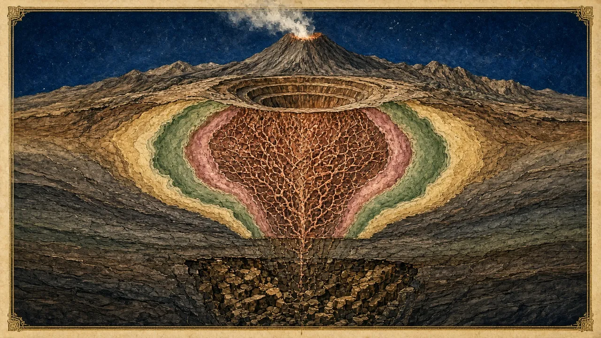

- Classify six short deposit descriptions by type
- Flag a claimed grade × tonnage that falls outside the typical box for its type
- Explain how the weathering profile changes mining and processing costs
On this page
Investor-depth geology: what you actually need
You do not need a geology degree to invest well. You do need enough geology to judge a claim: is this grade normal for this type of deposit? Is the tonnage plausible? Will the ore get harder and more refractory at depth? This module gives you that, and the reference library holds the detail.
One diagram of plate tectonics (and why it matters)
Ore deposits form where hot fluids or magmas concentrate metals, and most of that happens at plate boundaries:
- Subduction zones, where oceanic plates dive under continents, produce porphyry copper-gold deposits and epithermal gold above them. Chile, Peru and Indonesia lie on these belts.
- Collision zones and old mountain belts produce orogenic gold in shear zones.
- Rifts and mid-ocean ridges produce VMS base-metal deposits and sediment-hosted copper.
- Stable cratons host BIF iron ore, ancient greenstone gold, nickel sulphides and pegmatites.

Australia's ore factories
| Province | Age and type | Famous for |
|---|---|---|
| Yilgarn Craton (WA) | Archaean greenstones (>2.6 bn years) | Orogenic gold (Kalgoorlie), nickel sulphides (Kambalda), lithium pegmatites (Greenbushes, Mt Holland) |
| Pilbara Craton (WA) | Archaean granite-greenstone with Proterozoic BIF basins | Iron ore (Hamersley), lithium (Pilgangoora), gold (Hemi) |
| Lachlan Fold Belt (NSW/Vic) | Palaeozoic | Porphyry Cu-Au (Cadia), Victorian goldfields |
| Gawler Craton (SA) | Proterozoic | IOCG (Olympic Dam, Prominent Hill, Carrapateena) |
Go deeper: Structure and alteration: how geologists vector in optional
- Structure is plumbing. Faults and shear zones are pathways for mineralising fluids. Geologists chase intersections, bends and dilational jogs.
- Alteration is a halo. Fluids change the host rock (sericite, silica, potassic and chlorite alteration) over a much larger footprint than the ore itself. Alteration zoning tells a geologist which way to step out.
- Geochemistry and geophysics detect halos and contrasts, not ore directly (Module 5).
The weathering profile
In Australia's old, flat landscapes, rocks have been weathering for millions of years. The result is a layered profile that changes everything about a deposit's economics.
Near-surface oxide ore is soft, cheap to mine (often free-dig, with no blasting) and gold in oxide is usually easy to leach. Many WA gold projects look brilliant in years 1–2 on oxide feed. Then they hit transitional and fresh ore: it is harder (more power and grinding media), recoveries can fall, and sulphides may be refractory. Always ask what share of the reserve is oxide, transitional and fresh, and what the recovery is for each.
In copper systems, weathering can leach copper from the oxide zone and re-deposit it just below the water table as a high-grade supergene blanket (chalcocite). That can make a great early pit, but it is a thin layer over lower-grade primary ore.
Deposit type predicts grade, tonnage and capex
The single most useful geological habit is to match the claim to the type.
| Type | Typical grade | Typical size | Typical mining |
|---|---|---|---|
| Porphyry Cu(-Au) | 0.3–1% Cu | 100 Mt to several Bt | Large open pit or block cave |
| Orogenic Au | ~1–3 g/t open pit; ≥4–5 g/t underground | 1–50 Mt | Pit then underground |
| Spodumene pegmatite | ~1–1.5% Li₂O | 10–400 Mt | Open pit |
| VMS | 1–5% Cu plus Zn (+Pb, Ag, Au) | 1–100 Mt | Underground |
| Pilbara DSO hematite | ~56–62% Fe | 100s of Mt to Bt | Open pit plus rail and port |
- "A porphyry copper discovery with 50 m @ 0.25% Cu." → Low but within reason if the tonnage is very large and there is gold credit. Ask about strip ratio and the copper price used.
- "Orogenic gold underground resource at 1.4 g/t." → Too low for underground mining unless widths are very large. Ask whether it is really an open-pit resource reported to depth.
- "Spodumene pegmatite at 2.8% Li₂O over 40 m." → Exceptional. Check whether it is a selected interval within a wider zone.
Hemi: classified correctly
Hemi is intrusion-hosted gold in Archaean diorite and quartz-diorite intrusions within the Mallina Basin. It is not a textbook intrusion-related gold system (IRGS), and some lodes are shear-controlled. The gold sits with sulphides and is partly refractory ✔. Three consequences follow:
- Bulk tonnage, modest grade (reserve 1.5 g/t), so an open pit with a high throughput (10 Mtpa).
- Transported cover hid it from surface sampling, which is why aircore drilling through the cover found it.
- Sulphide metallurgy requires flotation and oxidation, which adds capex (Module 8).
- Deposit type: intrusion-hosted Au in diorite intrusions (Mallina Basin, Pilbara Craton)
- Expectation box: about 1–2 g/t, large tonnage, open pit. The reserve of 1.5 g/t over ~121 Mt fits the box.
- Cover: transported sediments masked the discovery. Aircore was the right tool.
- Weathering: there is an oxide and transitional cap, but most ore is fresh sulphide, so expect harder, partly refractory feed.
- Questions for later: the recovery split between free-milling and refractory ore (Module 8); strip ratio 6.6:1 (Module 9).
- A "Tier-1 district" tag with no drilling on the actual tenement.
- "Same structure as [famous mine]" when the famous mine is 50 km away.
- Rock chips or soils presented as if they were drill intercepts.
- Grades well outside the type box with no explanation.
Practice tasks
Checkpoint quiz
Score 80% or more to mark this module mastered. Your best score is saved in this browser.